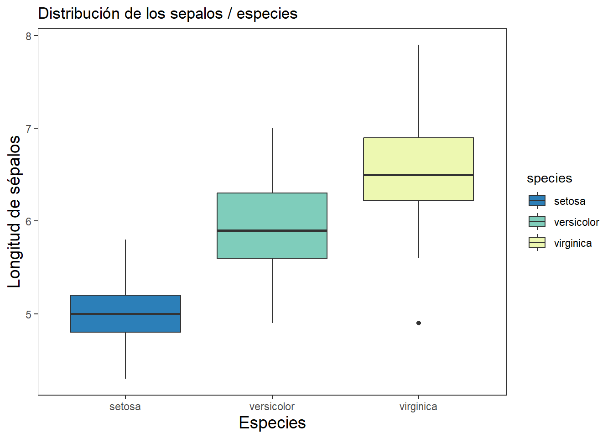
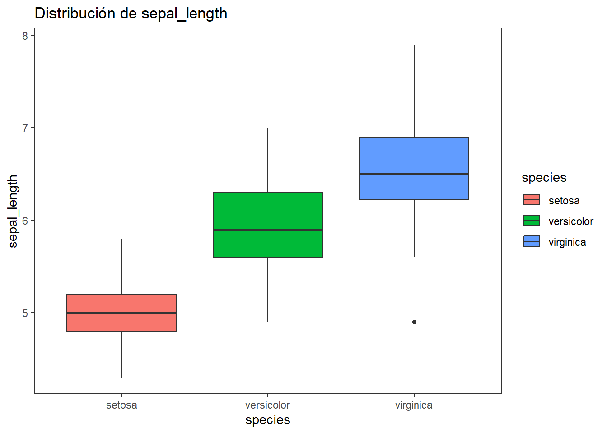
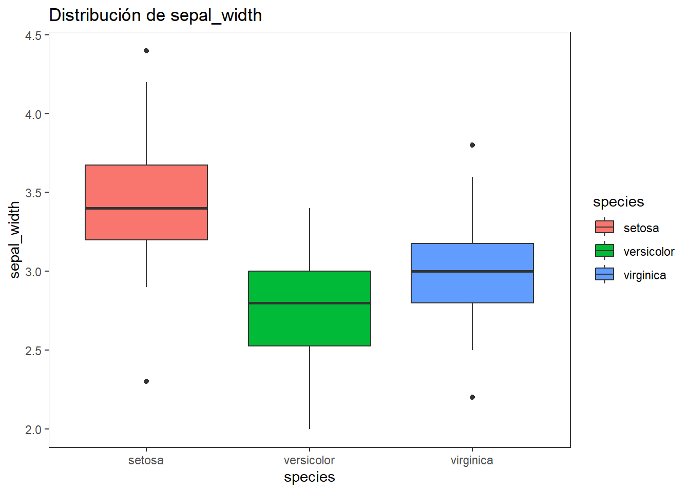
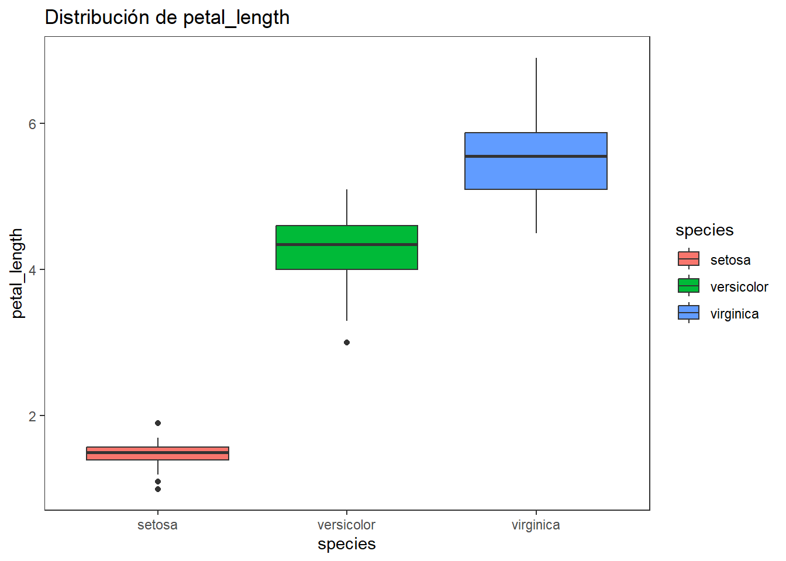
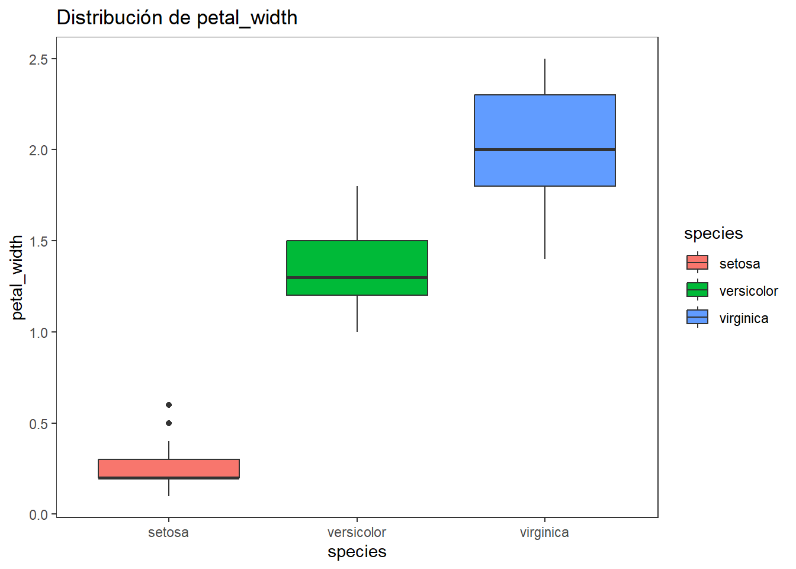
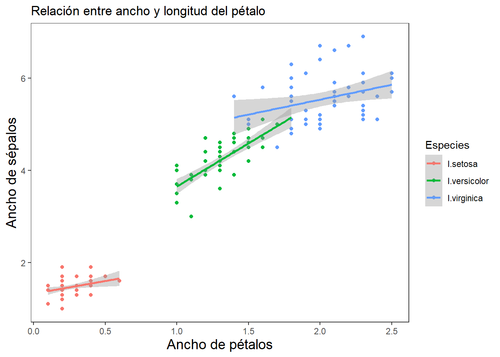
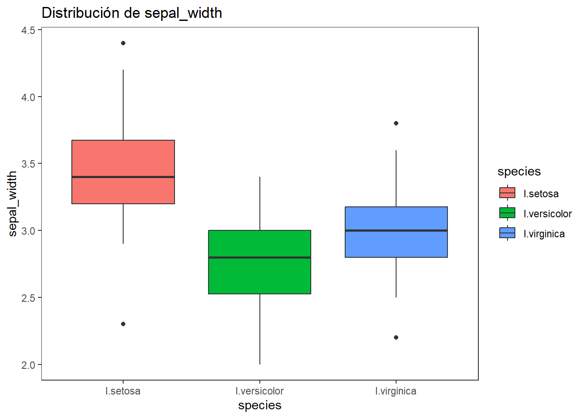
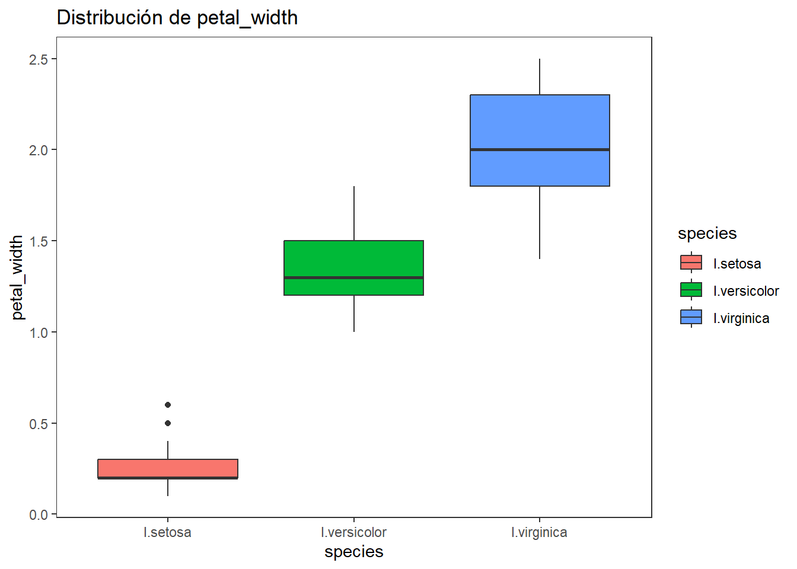

# Instalar y cargar Tidyverse
# install.packages("tidyverse") # Descomentar si no está instalado
library(tidyverse)
library(kableExtra)Resumen
El presente taller tiene por objeto, brindar pautas generales para el manejo y visualización de datos biológicos en el lenguaje tidyverse de R. Se parte de un ejercicio inicial con la base de datos de lirios (iris), de distribución gratuita en R.
El presente taller tiene por objeto brindar pautas generales para el manejo y visualización de datos biológicos en el lenguaje tidyverse de R. Se parte de un ejercicio inicial con la base de datos de lirios (iris), de distribución gratuita en R.
El objetivo de este taller consiste en reforzar y profundizar el manejo de bases de datos con tidyverse, permitiendo a los estudiantes:
Afianzar transformaciones más complejas con
mutate,case_when,across,rowwise.Aplicar ordenamientos condicionales.
Generar agrupamientos cruzados.
Automatizar tareas con
map().Integrar visualizaciones adaptativas.
Taller 1. Introducción al Tidyverse
Cargar librerías o paquetes requeridos
Cargar las librerías requeridas. El Tidyverse es una colección de paquetes diseñados para trabajar con datos de manera eficiente y legible. Incluye herramientas como dplyr, ggplot2, tidyr, y más.
Carga y exploración de datos
glimpse es el comando de tidyverse que reemplaza a str en el lenguaje anterior de R.
# Base de datos de lirios
data(iris)
datos <- iris
# Explorar estructura
# glimpse(datos)
# str(datos)
# summary(datos)Otra forma de cargar estas bases de datos. Se presentan unos cambios sutiles en los nombres de las variables, comparado a los comandos anteriores.
# Cargar un conjunto de datos ejemplo
url <- "https://raw.githubusercontent.com/mwaskom/seaborn-data/master/iris.csv"
datos <- read_csv(url)
# Explorar estructura
# glimpse(datos)
summary(datos) sepal_length sepal_width petal_length petal_width
Min. :4.300 Min. :2.000 Min. :1.000 Min. :0.100
1st Qu.:5.100 1st Qu.:2.800 1st Qu.:1.600 1st Qu.:0.300
Median :5.800 Median :3.000 Median :4.350 Median :1.300
Mean :5.843 Mean :3.057 Mean :3.758 Mean :1.199
3rd Qu.:6.400 3rd Qu.:3.300 3rd Qu.:5.100 3rd Qu.:1.800
Max. :7.900 Max. :4.400 Max. :6.900 Max. :2.500
species
Length:150
Class :character
Mode :character
1. Selección y filtrado
select funciona para escoger filas o columnas en particular. filter sirve para escoger elementos en particular de las bases de datos.
# Seleccionar columnas "sepal_legth y species" (datos_selec)
datos_selec <-
datos %>%
select(sepal_length, species)# Filtrar filas de "I. setosa" (datos_filtrados)
datos_filtrados <-
datos %>%
filter(species == "setosa")2. Creación de nuevas variables
mutate se usa para generar columnas adicionales, que pueden ser variables derivadas de la combinación de una o más variables iniciales.
# Crear una nueva columna "sepal_area" (datos_area)
datos_area <-
datos %>%
mutate(sepal_area = sepal_length * sepal_width) 3. Resumen estadístico de datos agrupados
group_by depende de contar con factores (variables con datos en bloques) para poder realizar resúmenes, como promedios (mean), desviaciones estándar, entre otros. El argumento na.rm = TRUE indica que se deben ignorar los valores faltantes (NA) al calcular los estadísticos de sepal_length para cada especie de lirio.
# Resumen estadístico "datos_resumidos" de "sepal_length"
datos_resumidos <-
datos %>%
group_by(species) %>% # Factor es species
summarise(datos.m = mean(sepal_length, na.rm = TRUE), # medias de s_l
datos.de = sd(sepal_length), # desviaciones de s_l
datos.var= round(var(sepal_length),3), # varianzas de s_l
datos.n = n(), # tamaño de la muestra
datos.ee = sd(sepal_length)/ # error estándar
sqrt(n())
)
print(datos_resumidos)# A tibble: 3 × 6
species datos.m datos.de datos.var datos.n datos.ee
<chr> <dbl> <dbl> <dbl> <int> <dbl>
1 setosa 5.01 0.352 0.124 50 0.0498
2 versicolor 5.94 0.516 0.266 50 0.0730
3 virginica 6.59 0.636 0.404 50 0.0899# Impresión de la tabla
# head(datos_resumidos) %>%
# kbl(caption = "", booktabs = F,longtable = T) %>%
# kable_classic(full_width = F, html_font = "Cambria")4. Estadísticos múltiples con across()
datos_estad <-
datos %>%
group_by(species) %>% # Agrupar los datos por especie
summarise(across( # Aplicar funciones a todas las variables numéricas
where(is.numeric), # Seleccionar solo columnas numéricas
list(
media = ~mean(.x, na.rm = TRUE), # Media
sd = ~sd(.x, na.rm = TRUE), # Desviación estándar
cv = ~sd(.x, na.rm = TRUE) / # Coeficiente de variación
mean(.x, na.rm = TRUE)
)
))
# Opcional al final:
# .names = "{.col}_{.fn}" # Nombrar las nuevas columnas con el formato original5. Transformación de datos
pivot_longer emula a las tablas dinámicas de Excel, en el sentido de ajustar las bases de datos en formatos alargados o a lo ancho. Para el siguiente ejemplo, se filtran los datos de los sépalos con sus valores en frente, nombrando a las variables de sépalos como “measurement” y a sus valores como “value”.
# De formato ancho a largo (formato_largo)
formato_largo <-
datos %>% # Quitar las columnas 3 y 4 (petal)
pivot_longer(cols = starts_with("sepal"), # Formato largo para columnas con sepal
names_to = "measurement", # Nombre de la nueva columna
values_to = "value" # Nombre de la columna de valores
)pivot_wider, permite convertir el formato alargado a uno similar a la base de datos original (datos)
# De formato largo a ancho - volver a la base inicial (formato_ancho)
formato_ancho <-
formato_largo %>%
pivot_wider(names_from = "measurement", # Columna que pasará a formato acho
values_from = value, # valores de las nuevas columnas
values_fn = first) # Para datos repetidos tomar el primero6. Unión de datos
tibble, similar a datos.frame, permite fusionar elementos en las bases de datos. Para el siguiente ejemplo se crean dos vectores (species y region) y se unen los tres elementos de cada uno, para generar una base de datos de 3 x 3 elementos.
# Unir bases de datos - dataframe "datos_unidos", crear variable "region"
datos_unidos <-
tibble(
species = c("setosa", "versicolor", "virginica"),
region = c("A", "B", "C")
)datos_combinados, permite unir a los elementos de la base anterior con los de la base original de lirios, con el objetivo de insertar la columna “region”.
# Unir o insertar "region" a la base de lirios "datos"
datos_combinados <-
datos %>%
left_join(datos_unidos, by = "species")7. Clasificación condicional por tamaño de sépalo
a. Categorización manual
# Generación de la variable agrupadora "sepal_length"
datos_agrup <-
datos %>%
mutate(sepal_grupos = case_when(
sepal_length < 5 ~ "Pequeño",
sepal_length < 6.5 ~ "Mediano",
TRUE ~ "Grande"
))
# Verificar resultado
datos_agrup %>%
count(sepal_grupos, species)# A tibble: 8 × 3
sepal_grupos species n
<chr> <chr> <int>
1 Grande versicolor 9
2 Grande virginica 26
3 Mediano setosa 30
4 Mediano versicolor 40
5 Mediano virginica 23
6 Pequeño setosa 20
7 Pequeño versicolor 1
8 Pequeño virginica 1b. Categorización con cuantíles.
Este método divide la variable en tres partes iguales (terciles) utilizando los cuantiles de la distribución. En el siguiente ejercicio se crea una variable categórica llamada Salinity_Level.
datos_agrup1 <-
datos %>%
mutate(sepal_grupos = case_when(
sepal_length <= quantile(sepal_length, 1/3, na.rm = TRUE) ~ "Baja",
sepal_length <= quantile(sepal_length, 2/3, na.rm = TRUE) ~ "Media",
sepal_length <= quantile(sepal_length, 3/3, na.rm = TRUE) ~ "Alta"
))
# Se puede resumir el nivel alto por el comando "TRUE ~ "Alta"".8. Cálculo de métricas por fila (rowwise())
Se calculará los promedios y totales de cada fila, relacionada a las cuatro variables florales. Con rowwise(), se agregan nuevas columnas a la base de datos original. Para este caso, una con las sumas y otra con las medias de las variables numéricas. Ideal para explorar el comportamiento combinado de las variables en cada caso.
# Calcular la suma y media para cada fila
datos_fila <-
datos %>%
rowwise() %>% # Modo por fila para operar sobre columnas dentro de cada fila
mutate(
suma_medidas = sum(c_across(where(is.numeric))), # Suma las columnas numéricas de la fila
media_medidas = mean(c_across(where(is.numeric))) # Calcula el promedio de las columnas numéricas de la fila
) %>%
ungroup() # Salir del modo por fila y volver a operación por columnas (modo por defecto)9. Reordenamiento condicional
arrange, ordena en este caso de forma descendente a una variable derivada llamada “petal_ratio”.
#
datos_ordenados <-
datos %>%
mutate(petal_ratio = petal_length / petal_width) %>%
arrange(species, desc(petal_ratio))
head(datos_ordenados, 10)# A tibble: 10 × 6
sepal_length sepal_width petal_length petal_width species petal_ratio
<dbl> <dbl> <dbl> <dbl> <chr> <dbl>
1 4.9 3.1 1.5 0.1 setosa 15
2 5.2 4.1 1.5 0.1 setosa 15
3 4.8 3 1.4 0.1 setosa 14
4 4.9 3.6 1.4 0.1 setosa 14
5 4.3 3 1.1 0.1 setosa 11
6 4.8 3.4 1.9 0.2 setosa 9.5
7 5.4 3.4 1.7 0.2 setosa 8.5
8 4.8 3.4 1.6 0.2 setosa 8
9 5 3 1.6 0.2 setosa 8
10 4.7 3.2 1.6 0.2 setosa 8 10. Resumen cruzado (tabla de contingencia)
count, genera una tabla de contingencia (cruzada) en formato ancho (una columna por grupo), entre las especies y los grupos de sépalo, con conteos. Es útil para comparar la distribución de frecuencias de los grupos dentro de cada especie.
# Contar combinaciones de sépalos x especies y reorganizar en formato ancho
datos_agrup1 %>%
count(species, sepal_grupos) %>% # Contar casos por combinación de especie y grupo de sépalo
pivot_wider(
names_from = sepal_grupos, # Usar los valores de 'sepal_grupos' como nombres de columna
values_from = n, # Llenar las celdas con los conteos (n) de frecuencias.
values_fill = 0 # Rellenar con 0 en caso de combinaciones ausentes
)# A tibble: 3 × 4
species Baja Media Alta
<chr> <int> <int> <int>
1 setosa 45 5 0
2 versicolor 6 33 11
3 virginica 1 18 3111. Transformación automatizada con map()
Este código produce un resumen con una fila por cada variable numérica, mostrando el rango (mínimo y máximo) observado en los datos. El resultado es útil para comparar la dispersión de las variables en su escala original.
# Calcular el rango (mínimo y máximo) de cada variable numérica
datos_rangos <-
datos %>%
summarise(across(where(is.numeric), # Aplicar la función a las columnas numéricas
~ list(range(.x)))) %>% # Calcular el rango (mínimo y máximo) de cada variable y guardarlo como lista
pivot_longer(everything(),
names_to = "variable", # Colocar los nombres de las variables originales en una columna llamada "variable"
values_to = "rangos") # Colocar los rangos (como listas) en una columna llamada "rangos"12. Visualización básica
ggplot2 es el pricipal paquete gráfico de tidyverse y de manera similar a los comandos anteriores, se construye por capas, separadas con “+”.
library(forcats) # Para manipulación de factores
# Cambiar etiquetas de Layers con recode_factor()
# Crear un gráfico de caja, para comparar longitudes de sépalos
library(ggplot2)
ggplot(datos, aes (x = species, y = sepal_length)) +
geom_boxplot(aes(fill = species)) +
labs (title = "Distribución de los sepalos / especies",
x = "Especies", y= "Longitud de sépalos") +
scale_fill_manual(values = c("#2c7fb8", "#7fcdbb", "#edf8b1")) +
theme_bw() +
theme(
panel.grid.minor = element_blank(),
panel.grid.major = element_blank(),
axis.title = element_text(size = 14)
)
# se puede reemplazar scale por: scale_color_viridis(discrete = TRUE)13. Visualización adaptativa de múltiples variables
Este código genera diagramas de caja (boxplots) para cada variable morfológica del conjunto de datos datos, diferenciadas por especie. Las gráficas se producen automáticamente una por variable, gracias al uso de map() de purrr. Es útil para visualizar y comparar la distribución de las variables entre especies.
# Crear una función para graficar boxplots de cada variable por especie
graficas_variables <-
# Definir una función que recibe el nombre de una variable
function(var) {
# gráfico de ggplot: especie en eje x, variable en y
ggplot(datos, aes_string(x = "species", y = var)) +
# Agregar diagramas de caja con relleno por especie
geom_boxplot(aes(fill = species)) +
labs(title = paste("Distribución de", var)) +
theme_bw() +
theme(panel.grid = element_blank())
}
# Vector con los nombres de las variables a graficar
vars <- c("sepal_length", "sepal_width",
"petal_length", "petal_width")
# Aplicar la función a cada variable y generar las gráficas
# Ejecutar la función para cada variable y devolver una lista de gráficos
map(vars, graficas_variables) [[1]]
[[2]]
[[3]]
[[4]]
Cuestionario en clase
1. Resumen estadístico
Pregunta: ¿Cuántas especies diferentes hay en el conjunto de datos y cuántas observaciones hay para cada una?
# Escribe el código necesario para contar las especies y sus individuos
datos %>%
group_by(species) %>%
summarise(count = n())# A tibble: 3 × 2
species count
<chr> <int>
1 setosa 50
2 versicolor 50
3 virginica 50Pregunta: Calcula los valores máximos, mínimos, la mediana, el rango y el coeficiente de variación de sepal_length.
# Resumen estadístico "datos_resum"
datos %>%
group_by(species) %>%
summarise(datos.max = max(sepal_length), # Máximos
datos.min = min(sepal_length), # Mínimos
datos.me = median(sepal_length), # Mediana
datos.ran = max(sepal_length)-
min(sepal_length), # Rango
datos.coef= round(
sd(sepal_length)/
mean(sepal_length),2) # Coeficiente de variación
)# A tibble: 3 × 6
species datos.max datos.min datos.me datos.ran datos.coef
<chr> <dbl> <dbl> <dbl> <dbl> <dbl>
1 setosa 5.8 4.3 5 1.5 0.07
2 versicolor 7 4.9 5.9 2.1 0.09
3 virginica 7.9 4.9 6.5 3 0.1 Pregunta: Calcula la correlación entre sepal_length y petal_length para cada especie.
# Correlación entre sepal_length y petal_length por especie
# datos %>%
# group_by(species) %>%
# summarise(datos.cor = Pregunta: Calcula el coeficiente de asimetría (skewness) de sepal_width para cada especie.
# library(e1071) # Librería Para calcular skewness
# Coeficiente de asimetría de sepal_width por especie2. Filtrado condicional
Pregunta: Encuentra todas las observaciones donde el ancho del sépalo (sepal_width) es mayor a 3.5.
# Filtrar observaciones con ancho de sépalo > 3.5
sepalos_anchos <-
datos %>%
filter (sepal_width > 3.5) %>%
select (sepal_width, species)Pregunta: Filtra las observaciones donde petal_length es mayor a 4 y selecciona solo las columnas species y petal_length.
# Filtrar observaciones con largo de pétalo > 4 y escoger columnas species y petal_length
petalos_largos <-
datos %>%
filter (petal_length > 4) %>%
select (petal_length, species)Pregunta: Encuentra todas las observaciones donde sepal_length es mayor que el promedio de sepal_length para su especie.
# Filtrar observaciones con sepal_length mayor que el promedio de su especie3. Creación de variables
Pregunta: Calcula una nueva columna que sea la relación entre longitud y ancho del pétalo (petal_length / petal_width).
# Crear nueva columna para relación de pétalos
datos <-
datos %>%
mutate(relación_pétalos = petal_length / petal_width)4. Análisis resumido
Pregunta: Calcula el promedio de la relación de pétalos (petal_ratio) para cada especie.
# Resumir promedio de relación de pétalos por especie
datos %>%
group_by(species) %>%
summarize(prom_relación_pétalos = mean(relación_pétalos, na.rm = TRUE))# A tibble: 3 × 2
species prom_relación_pétalos
<chr> <dbl>
1 setosa 6.91
2 versicolor 3.24
3 virginica 2.785. Transformación de datos
Actividad: Convierte el formato de los datos para que todas las mediciones de sepalos (longitudes y anchos) queden en una sola columna.
# Transformar datos de ancho a largo
formato_largo <- datos %>%
pivot_longer(cols = starts_with("sepal"),
names_to = "measurement",
values_to = "value")6. Clasificación condicional por tamaño de sépalo
Pregunta: Categorizar las observaciones en función del tamaño del sépalo.
# Crear categoría según tamaño de sépalo
datos_cat <-
datos %>%
mutate(
sepal_categoria = case_when(
sepal_length < 5 ~ "Pequeño",
sepal_length < 6.5 ~ "Mediano",
TRUE ~ "Grande"
)
)
# Validar distribución
datos_cat %>% count(sepal_categoria, species)# A tibble: 8 × 3
sepal_categoria species n
<chr> <chr> <int>
1 Grande versicolor 9
2 Grande virginica 26
3 Mediano setosa 30
4 Mediano versicolor 40
5 Mediano virginica 23
6 Pequeño setosa 20
7 Pequeño versicolor 1
8 Pequeño virginica 17. Estadísticos múltiples con across()
Pregunta: Calcular el promedio, desviación estándar y CV para todas las variables cuantitativas.
# Cálculos agrupados por especie
datos_estad <-
datos %>%
group_by(species) %>%
summarise(
across(
.cols = where(is.numeric),
.fns = list(
media = ~mean(.x, na.rm = TRUE),
sd = ~sd(.x, na.rm = TRUE),
cv = ~sd(.x, na.rm = TRUE) /
mean(.x, na.rm = TRUE)
),
.names = "{.col}_{.fn}"
)
)
print(datos_estad)# A tibble: 3 × 16
species sepal_length_media sepal_length_sd sepal_length_cv sepal_width_media
<chr> <dbl> <dbl> <dbl> <dbl>
1 setosa 5.01 0.352 0.0704 3.43
2 versicol… 5.94 0.516 0.0870 2.77
3 virginica 6.59 0.636 0.0965 2.97
# ℹ 11 more variables: sepal_width_sd <dbl>, sepal_width_cv <dbl>,
# petal_length_media <dbl>, petal_length_sd <dbl>, petal_length_cv <dbl>,
# petal_width_media <dbl>, petal_width_sd <dbl>, petal_width_cv <dbl>,
# relación_pétalos_media <dbl>, relación_pétalos_sd <dbl>,
# relación_pétalos_cv <dbl>8. Cálculo de métricas fila por fila
Pregunta: Calcular la suma y media de todas las medidas de sépalos y pétalos por individuo.
# Sumar por fila las variables numéricas
datos_fila <-
datos %>%
rowwise() %>%
mutate(
suma_medidas = sum(c_across(where(is.numeric))),
media_medidas = mean(c_across(where(is.numeric)))
) %>%
ungroup()9. Reordenamiento complejo
Pregunta: Ordenar el conjunto de datos por especie y dentro de cada especie por mayor relación largo/ancho del pétalo.
# Ordenar según criterio compuesto
datos_ordenados <-
datos %>%
mutate(petal_ratio = petal_length / petal_width) %>%
arrange(species, desc(petal_ratio))
head(datos_ordenados, 10)# A tibble: 10 × 7
sepal_length sepal_width petal_length petal_width species relación_pétalos
<dbl> <dbl> <dbl> <dbl> <chr> <dbl>
1 4.9 3.1 1.5 0.1 setosa 15
2 5.2 4.1 1.5 0.1 setosa 15
3 4.8 3 1.4 0.1 setosa 14
4 4.9 3.6 1.4 0.1 setosa 14
5 4.3 3 1.1 0.1 setosa 11
6 4.8 3.4 1.9 0.2 setosa 9.5
7 5.4 3.4 1.7 0.2 setosa 8.5
8 4.8 3.4 1.6 0.2 setosa 8
9 5 3 1.6 0.2 setosa 8
10 4.7 3.2 1.6 0.2 setosa 8
# ℹ 1 more variable: petal_ratio <dbl>10. Resumen cruzado especie × categoría de sépalo
Pregunta: Cruzar dos variables categóricas generadas con mutate y resumir la frecuencia.
# Contingencia cruzada
datos_cat %>%
count(species, sepal_categoria) %>%
pivot_wider(names_from = sepal_categoria, values_from = n, values_fill = 0)# A tibble: 3 × 4
species Mediano Pequeño Grande
<chr> <int> <int> <int>
1 setosa 30 20 0
2 versicolor 40 1 9
3 virginica 23 1 2611. Transformación automatizada con map()
Pregunta: Aplicar una función personalizada a cada variable numérica.
# Instalar si es necesario
# install.packages("purrr")
library(purrr)
# Calcular rango por variable
datos_rangos <-
datos %>%
summarise(across(where(is.numeric),
~ list(rango = range(.x)))) %>%
pivot_longer(everything(), names_to = "variable",
values_to = "rangos")
print(datos_rangos)# A tibble: 5 × 2
variable rangos
<chr> <named list>
1 sepal_length <dbl [2]>
2 sepal_width <dbl [2]>
3 petal_length <dbl [2]>
4 petal_width <dbl [2]>
5 relación_pétalos <dbl [2]> 12. Visualización
Pregunta: Crear un gráfico de dispersión donde el eje X sea el ancho del pétalo (petal_width) y el eje Y la longitud del pétalo (petal_length), diferenciando por especie.
library(forcats) # Para manipulación de factores
# Cambiar etiquetas de Layers con recode_factor()
datos <-
datos %>%
mutate(species = recode_factor(species,
"setosa" = "I.setosa",
"versicolor" = "I.versicolor",
"virginica" = "I.virginica"))
# Figura
ggplot(datos, aes(x = petal_width, y = petal_length, color = species)) +
geom_point() +
geom_smooth(method= "lm") +
labs(title = "Relación entre ancho y longitud del pétalo",
x = "Ancho de pétalos", y = "Ancho de sépalos",
color= "Especies") +
theme_bw() +
theme(
panel.grid.major = element_blank(),
panel.grid.minor = element_blank(),
axis.title = element_text(size = 14)) # Aumenta el tamaño del texto de los ejes
# Aplicar la transformación logarítmica: scale_y_continuous(trans = "log10") 13. Visualización adaptativa
Pregunta: Visualizar automáticamente cada variable numérica agrupada por especie.
# Función para generar gráficas por variable
graficar_por_variable <- function(var) {
ggplot(datos, aes_string(x = "species", y = var)) +
geom_boxplot(aes(fill = species)) +
labs(title = paste("Distribución de", var)) +
theme_bw() +
theme(
panel.grid = element_blank()
)
}
# Aplicar a múltiples variables
vars <- c("sepal_length", "sepal_width",
"petal_length", "petal_width")
map(vars, graficar_por_variable)[[1]]
[[2]]
[[3]]
[[4]]